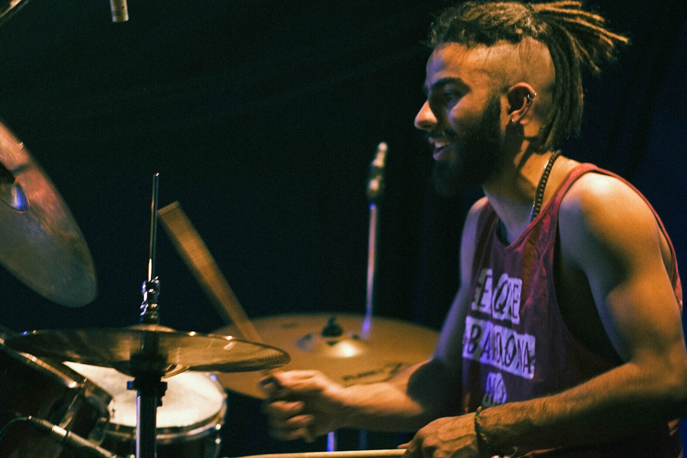
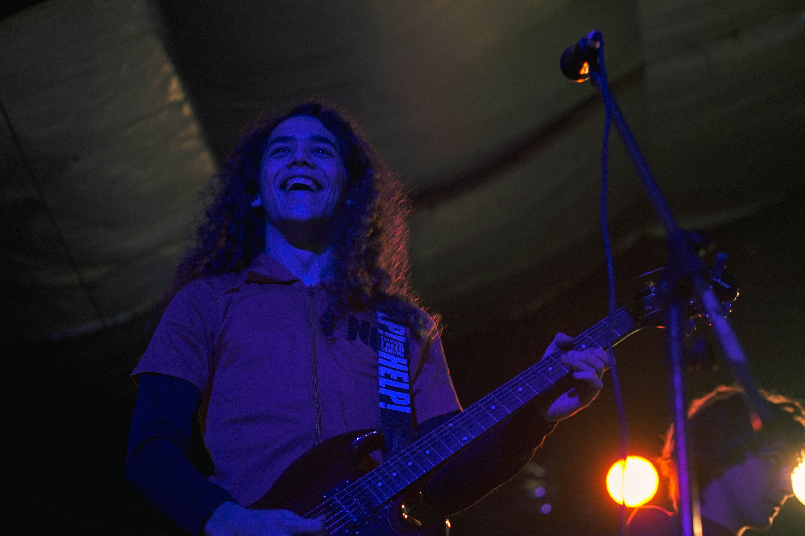
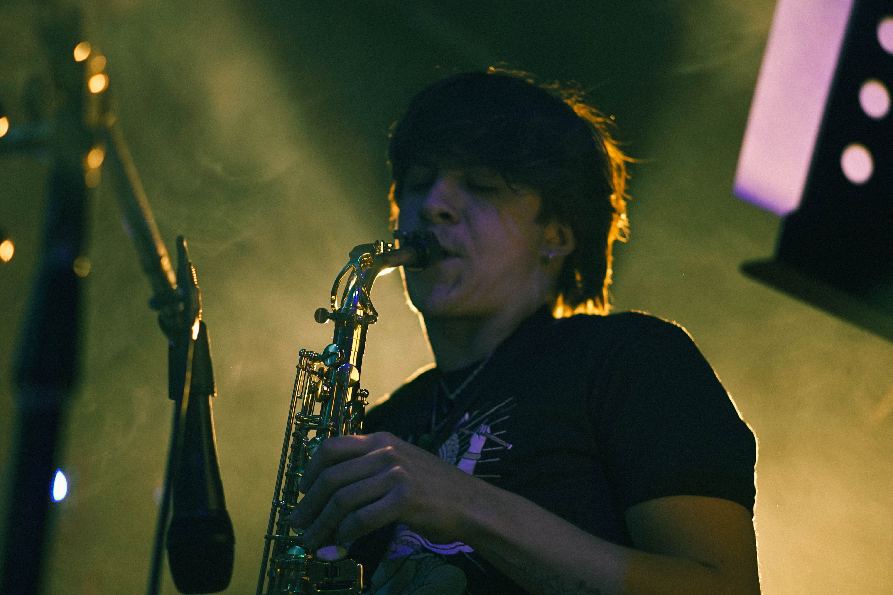
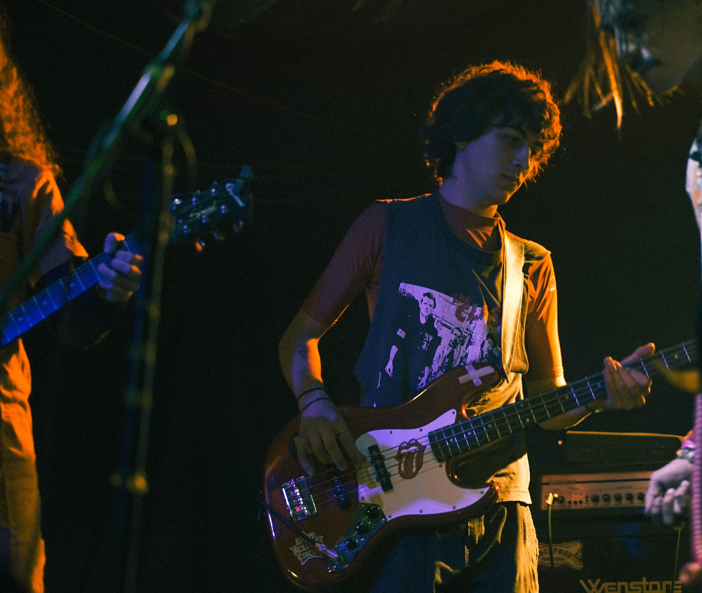
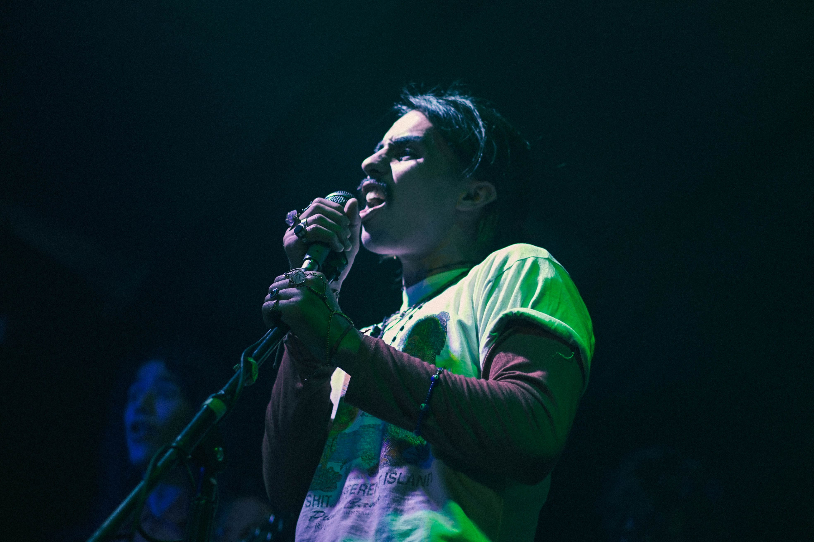

Juan Cruz De Carli

Juan cruz de carli, apodado "Papurri", nacido el 13/09/2002. Comenzo a tocar la bateria a principios de septiembre del año 2019,en pandemia, Junto a Tomas Sola quien ayudo en el proceso de iniciacion del instrumento y junto a su primo Federico, paso a paso fue ganando confianza, pocos meses despues se juntarian con Facundo Padron donde comenzarian a cranear lo que hoy en dia es “Deska” y a principios de abril se incorpora en la banda y sigue tocando hasta el dia de hoy.
Joaquin ruiz bruno
Nace el 5 de noviembre de 2002, su nombre completo es Joaquin Ezequiel Ruiz Bruno. 5 de noviembre de 2002, 44595741, joaquin ezequiel ruiz bruno, arranco a tocar el piano a los 6 años, a los 7 le regalaron su primer guitarra que no toco hasta muchos años despues, siguio tocando el piano por muchos años de manera autodidacta, a los 12 empezo a tocar la bateria. A los 13 empieza a tocar el ukelele lo cual deriva en agarrar la guitarra. Para los 14 entre a la banda con su papa y seguio aprendiendo a tocar.A los 18 años entro a Deska y sigue tocando hasta hoy en dia
Mateo Del Pozo

Mateo Del Pozo, nacido el 1/5/2003, comenzo su carrera como guitarrista a los 7 años hasta hoy en dia, siendo junto a Facundo y Joaquin uno de los mas experimentados con su instrumento. En 2021 Juan Cruz, Tomas y Facundo, lo invitaron a participar de su proyecto, tras muchas semanas de juntarse a ensayar mateo se incorporo de manera increible en la banda siendo hoy muy importante, no solo musicalmente sino por su capacidad de ayudar a sus compañeros. Mateo esta cursando produccion audiovisual y aspira a ser un gran productor y hasta quizas lograr producir temas o discos de su banda.
Facundo Gildick

Facundo Gil Dik, nacio el 20-8-2001, Comenzo a tocar el saxofón a mediados de febrero del año 2022 y dos meses despues tuvo su primera aparicion en la banda, en el teatro el refugio de Banfield el 16 de abril del mismo año. A pesar de su poca experiencia con su instrumento, se desenvuelve de manera prolija y exitosa en los shows, sumado a clases y refuerzo de estudio del mismo, Actualmente solo forma parte de deska pero aspira a tener mas de un proyecto musical
Tomas Sola

Tomas Sola, nacio el 1 de agosto del año 2002. Comenzo tocando la guitarra hasta llegar marzo del año 2021 donde se inclinó absolutamente al bajo. Él junto a Facundo Padron y Juan Cruz De Carli fueron los pioneros de lo que hoy en dia es Deska. Mas alla de ser un bajista relativamente principiante, su performance en cada show hace crecer la espectativa de la gente, esta muy enfocado en estudiar y aprender cada dia mas acerca de su instrumento y proyectarse a ser un mejor bajista
Facundo Padron

Facundo Padron nació el 14 de septiembre de 2002, un dia despues de juan cruz el baterista.
Facundo a sus 7 años de edad ya contaba con la compañia de su guitarra, siendo asi uno de los integrantes con mas experiencia en el ambito musical, junto a joaquin y mateo. Cuando incio con el proyecto musical “deska” su inclinacion por ser la voz de la banda fue instantánea, siendo asi el unico vocalista con el que cuentan.